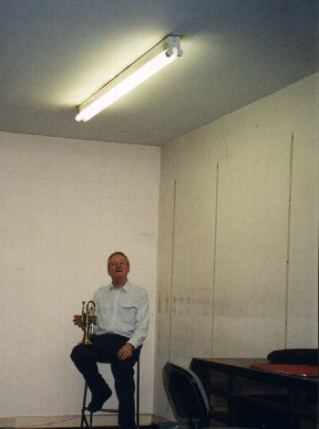

Retirement Date 11th September 1999
This was the date I should have retired, but we had no buyers for the shop, neither was the lease on the shop agreed. I decided that I would stick out, if necessary until 2008 and walk away from the place if no one would buy it.

After a false start with Mr Siddique I further resolved I would not sell, but continue working rather than sell it off cheaper than it's true worth. However, Raj Sahti came along with a firm proposal and seemed very positive about what he could do with it and we agreed the terms of the transfer. Needless to say the legal side of things got more and more complicated and not for the first time in my life I trusted the man I was dealing with and allowed him to run it from the agreed transfer date.- July 1st, 2000. I have no regrets. Raj gutted the place. Re-fitted it and sold it on, as I knew he would.
Now I can begin to live a little, or so I thought! - Since 'retiring' I have been far busier than I ever was working my socks off in the news trade. Among the things I've managed to cover since retirement have been:-
- Take up watercolours again - Figure drawing, portraits and mixed media work
- Visit America with Dan (Mount Laurel, New Jersey - a 'DRY' State)
- Attend Indian Cookery classes (10 weeks with Rehana Mirtza)
- Visit Valerie and Marcelo for a whole week each year (twice in 2004 - Including Sevilla - Wow!)
- Renovate the Wendy house and Railway seat, build a pergola, grow vegetables
- Meet the kids daily from school (most times) and get Clara's shopping and pension etc.
- Volunteered to help Dave Winn with OLD BEN draw, finished up becoming treasurer, almoner, swindle operator and general factotum for a while
- Helped Mukesh and Young Cutler with their little problems
- Joined adult education Spanish classes with Liliana Achata for two years, now in year 4 with Paula Armati Negus (doing advanced intermediate having missed 'intermediate' with Deborah Esses which was cancelled)
- Took up Valerie's offer of a vist to INDIA for two weeks. (read more about that elsewhere)
- Bought an old valve Revox G36 on E-Bay to play all my old tapes
- Got out the oil paints and had a splash about on some canvas Terry gave me
- There is probably more..........